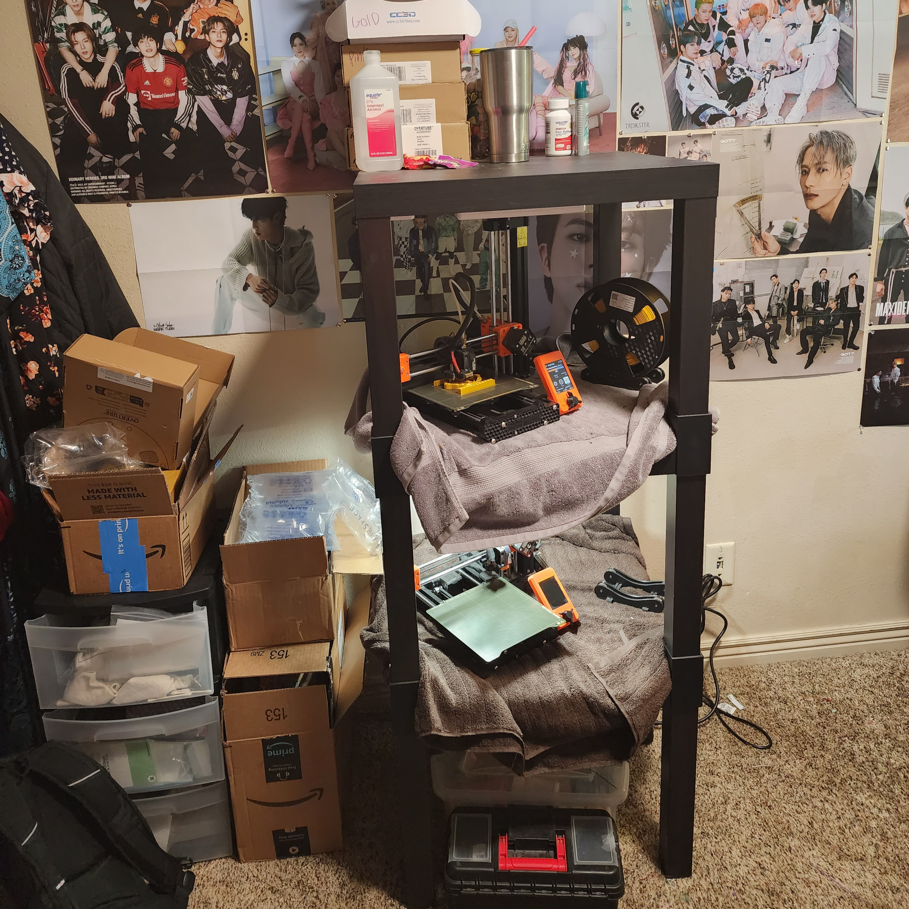
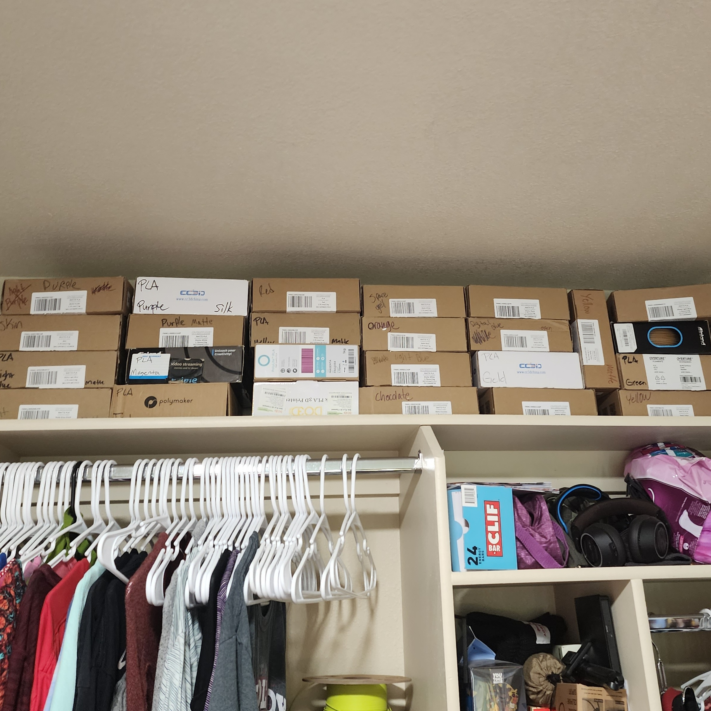

Using 3 ikea tables I was able to build a makeshift shelf to holf my two 3d printers for my small single person dorm room. Even though I have my own room I was
still worried that the sound of the printers could be heard from the room next to mine So i used thick towels for the printers to sit ontop of to muffle the sounds. And don't worry, this method is perfectly safe
and non flammable. My room is small, there isn't much room, especailly for all of my filaments since I have 15+ colors. Thankfully the top shelf of my closet was the perfect place to
store all of these boxes. The rest of my materials have been put into two of my four drawers that are under my bed.
Running a 3d printing bussiness may seem like an eas job. You just press the button and walk away right? Wrong. There is alot more work going into it, especailly
since I'm also a full time student. 3D printers are very finnicky. I need to constantly replace small parts like gears and nozzles. I also need to countinously change the settings themselves so everthing prints well. If I don't do this, I
have alot of product that I have to either throw away or sell for discount because they are up to my full price standards. I also have classes from 9am to 3pm everyday, and since most of my designs require me to change the colors midprint, I am not able to print the most effectivly to
fill orders. I have to find lomger prints to do while i'm gone, regardless of if I need them for orders or not.
While most people have set times to work, I am constantly working. I have to constantly stop working on homework to change colors. I work into the late evening to pack orders to take to the post office the next day, and I am
constantly answering customers questions on rest days like sunday or even at 3am. Work is always on the brain. But I still very much control my scedule. If I have
an important paper to write, I am able to push back my work till the next day. As long as I get everything made and sent out before it's deadline, I am golden.